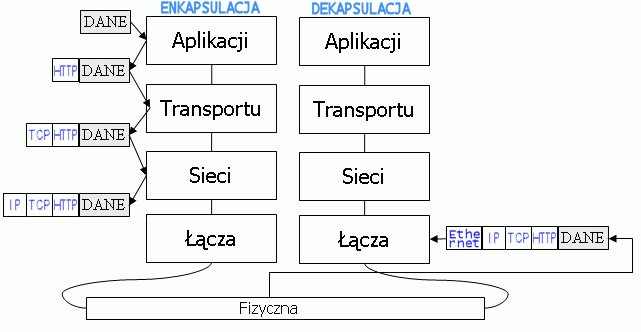
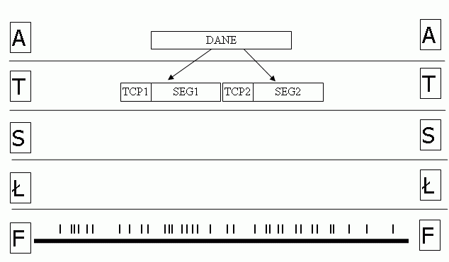
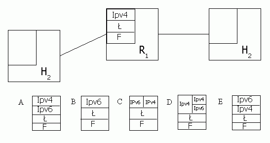

Laboratoria maj± na celu przybli¿yæ wewnêtrzn± budowê protoko³ów, pokazaæ odwzorowanie modelu ISO/OSI w praktyce oraz przybli¿yæ dzia³anie skanerów sieci.
Zapoznanie siê z Ethereal'em badaj±c ¿±danie HTTP do strony HTML
Rysunek 1

Poni¿szy diagram ma przedstawiaæ fragmentacjê i defragmentacjê pakietów
Rysunek 2

1. Napisz implementacjê funkcji udostêpnianej przez warstwê sieci dla warstwy transportu:
//wysy³a segment otrzymany od warstwy transportu na podany adres void Wy¶lij_Segment( Segment dane, Adres odbiorca );
Funkcja ta stanowi czê¶æ interfejsu pomiêdzy warstw± transportu oraz warstw± sieci. Dane s± przesy³ane przez warstwê transportu do warstwy sieci w postaci segmentów za pomoc± wywo³ania tej funkcji. Poniewa¿ warstwa sieci pos³uguje siê adresami IP, warstwa transportu musi jej dostarczyæ taki adres. Funkcja Wy¶lij_Segment ma za zadanie utworzyæ pakiet z segmentu (zak³adamy, ¿e segment jest ma³y i nie nast±pi fragmentacja); w nag³ówku pakietu trzeba wpisaæ adres odbiorcy. Nastêpnie warstwa sieci musi jeszcze wybraæ interfejs, na którym ma wys³aæ ten pakiet tak, ¿eby dotar³ on do odbiorcy. Potem warstwa sieci przekazuje pakiet do warstwy ³±cza, która go wy¶le, korzystaj±c z odpowiedniej funkcji warstwy ³±cza.
Warstwa ³±cza udostêpnia warstwie sieci funkcjê:
//wysy³a pakiet p, utworzony przez warstwê sieci, poprzez interfejs i void Wy¶lij_Pakiet( Pakiet p, Interfejs i );
Biblioteka stosu protoko³ów udostêpnia funkcje:
//tworzy nag³ówek zawieraj±cy adres nadawcy i odbiorcy Nag³ówek Utwórz_Nag³ówek( Adres nadawca, Adres odbiorca ); //tworzy pakiet z nag³ówka i segmentu Pakiet Utwórz_Pakiet( Nag³ówek n, Segment s ); //wybiera interfejs, przez który nale¿y wys³aæ pakiet Interfejs Wybierz_Interfejs( Adres a ); //zwraca adres hosta, na którym zosta³a wywo³ana Adres Mój_Adres();
2. Zaimplementuj funkcjê warstwy sieci, wywo³ywan± przez warstwê ³±cza:
//odbiera pakiet od warstwy ³±cza void Odbierz_Pakiet( Pakiet p );
Ta funkcja warstwy sieci odbiera otrzymany pakiet od warstwy ³±cza. Pakiet ten mo¿e byæ zaadresowany do naszego hosta, i wtedy nale¿y usun±æ nag³ówek warstwy sieci i przekazaæ dane (segment, bo zak³adamy ¿e nie ma fragmentacji) do warstwy transportu. Je¶li jednak pakiet nie jest przeznaczony dla naszego hosta, to trzeba go przekazaæ dalej - wys³aæ przez odpowiedni interfejs.
Oprócz funkcji opisanych powy¿ej, mamy tak¿e funkcje warstwy transportu:
//odbiera segment od warstwy sieci void Odbierz_Segment( Segement s );
Biblioteka stosu protoko³ów:
//usuwa nag³ówek warstwy sieci z pakietu Segment Usuñ_Nag³ówek( Pakiet p ); //zwraca adres odbiorcy zapisany w nag³ówku pakietu Adres Adres_Odbiorcy( Pakiet p );
Dostêpny jest równie¿ operator porównuj±cy obiekty Adres.
Na ho¶cie by³a zainstalowana karta Ethernet. Host by³ pod³±czony kablem Ethernet z sieci±. Teraz karta Ethernet zosta³a wyjêta i zast±piona przez kartê optyczn±, a host zosta³ po³±czony z sieci± za pomoc± ¶wiat³owodu. Zak³adamy, ¿e zosta³y wykonane wszystkie czynno¶ci na zewnêtrznym sprzêcie potrzebne do tego, ¿eby host komunikowa³ siê now± kart±. Nie zosta³y jedynie wykonane ¿adne zmiany w oprogramowaniu ani konfiguracji hosta.
Rysunek 3

Diagram przedstawia sieæ, w której dwa hosty po³±czone s± za po¶rednictwem rutera. Ruter w warstwie sieci u¿ywa protoko³u IPv4. Wybierz te z po¶ród narysowanych czterech stosów protoko³ów A, B, C, D i E, które umo¿liwiaj± komunikacjê obu hostom.